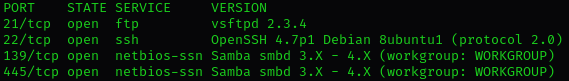

Hack The Box Walkthrough: Lame
Feb 9 2025
Lame is a Linux machine requiring only one exploit to get root access, making it easy to complete.
I begin, of course, by spawning the target machine. I'm connecting to it via my Kali Linux virtual machine. But before I do that, I load it up in VirtualBox using my latest snapshot. As usual, something goes wrong. Trying to load my latest snapshot gives me a result code that says "E_FAIL (0x80004005)". I do a bit of searching to find a fix so that I can get back on track. I find a video that basically says to run `bcdedit /set hypervisorlaunchtype off` in cmd, which apparently turns off the Hyper-V hypervisor in Windows (I should've mentioned earlier that I'm on 10). Whether this'll work or not isn't clear. As always, half the comment section of any given help video complains about the solution not working, while the other half says it works just fine. Both sides are equally vague and unhelpful.
Running the command gives me a brief "The operation completed successfully." and now I'm off to reset my PC. Although mildly annoying, I can't see if it works until I reset.
Now that everything seems to be working, I go on to download the necessary OpenVPN file to my VM. Once donwloaded, I just cd into my Downloads folder, and opening the VPN file is as easy as running `sudo openvpn lab_[myusername].ovpn`. After that, we look for "Initialization Sequence Completed" in the slew of information that results from running the command. Once we see that, we're good to go.
The target machine has an IP address of 10.129.148.70. To confirm reachability, I ping the machine a few times. All of my packets are received by the machine. We know this because we have a 0% pakcet loss rate. Anyway, with the address information, I begin service enumeration using Nmap. We're just targeting one machine in the network.
I run nmap with admin privileges using `sudo nmap 10.129.148.70 -sV -O`. A very basic scan considering all Nmap is capable of, but it gets the job done. I append `-sV` for service version information of each service, and `-O` for operating system detection. Having this information is critical for determining how to exploit a vulnerable service.
After a few seconds, we see that ports 21, 22, 139, and 445 are reported as open by Nmap. Port 21 is associated with FTP services, 22 with SSH, and 139 and 445 with NetBIOS.
Apparently a vsftpd (very secure FTP daemon) server is running on port 21. We can clearly see that it's running version 2.3.4. The website for vsftpd shows that the software hasn't been updated since 2021. At its core it's just an FTP server for UNIX systems.
A simple search using `searchsploit vsftpd` (very script kiddie of me, I know) shows that a couple of exploits do in fact exist for this service version.
Following that is port 22, which is running OpenSSH. All of us are aware of what OpenSSH does and what it's used for. For those who aren't, it's a protocol that allows for remote logins into a box. Nmap says that this version of OpenSSH is 4.7p1, but it's important not to blindly assume that everything Nmap reports is 100% accurate.
We then have on ports 139 and 445 the "netbios-ssn" service. Here, Samba is used. Samba is an open-source software suite that provides file and print services to SMB/CIFS clients. Samba uses the SMB (Server Message Block) protocol, which is the protocol Windows typically uses for sharing files and printers over a network. Samba enables Linux and Unix-based systems to communicate with Windows systems using this protocol, making cross-platform file sharing and printer access possible.
The SMB itself is a network file sharing protocol primarily used by Windows systems, but Samba can be used to enable non-Windows systems (Linux and macOS) for example, to communicate with each other using SMB. Basically, Samba is a great tool for cross-platform sharing. For example, a printer attached to a Linux machine can be shared with Windows machines using Samba. As another example, a Windows machine or Linux server shares media files (e.g., music, videos) using Samba, which can be accessed by other devices on the network.
One benefit of Samba is network integration, which allows Linux servers to act as file servers in a Windows network environment or vice versa.
Now, why is "netbios-ssn" running on ports 139 AND 445? After a bit of digging, the answer seems to be that the SMB protocol originally ran ontop of NetBIOS using port 139. As the protocol was updated, SMB began using port 445 on top of a TCP stack, allowing SMB to work over the internet.